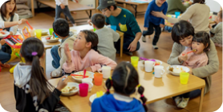
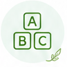
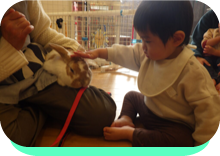
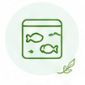
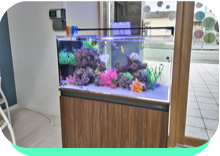

他事業
地域とともに
子どもたちの未来を育てます
子ども食堂
地域の子どもたちが安心して集まり、温かい食事を囲みながら過ごせる居場所として運営しています。栄養士が献立を考え、栄養バランスの取れた食事を提供しています。世代を超えた交流を通じて、子どもたちの心の成長も支えています。

また、子どもたちが芋掘りや稲刈りなどの体験活動を通して自ら収穫した食材も活用し、食への関心や感謝の気持ちを育んでいます。 食事の提供だけでなく、学習支援や遊びの時間も設け、誰もが気軽に立ち寄れる地域の拠点を目指しています。子どもたちの「安心できる居場所づくり」に取り組んでいます。
学童保育
放課後の子どもたちが安心して過ごせる環境を提供しています。宿題のサポートやさまざまな活動を通して、子どもたちの成長を支援します。
また、英語講師による英語活動を行い、楽しみながら英語に親しめる機会を設けています。さらに、施設ではウサギやニワトリとのふれあいを通して、命の大切さや思いやりの心を育んでいます。鑑賞魚も飼育しており、生き物を身近に感じながら豊かな感性を養える環境づくりに取り組んでいます。
-

英語活動
-
うさぎとのふれあい

-

観賞魚の飼育
